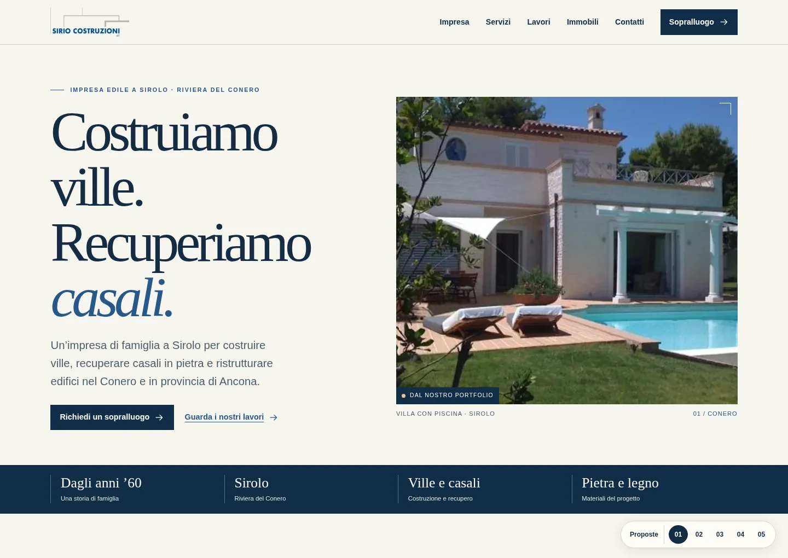

01Esplora la homeL’originale editoriale
La prima versione del sito: titoli serif, carta avorio, blu Conero e un portfolio fotografico in primo piano.
- Editoriale
- Serif
- Avorio e blu
Riferimento di partenza
Sirio-Costruzioni-Sito-v1 (3).zip